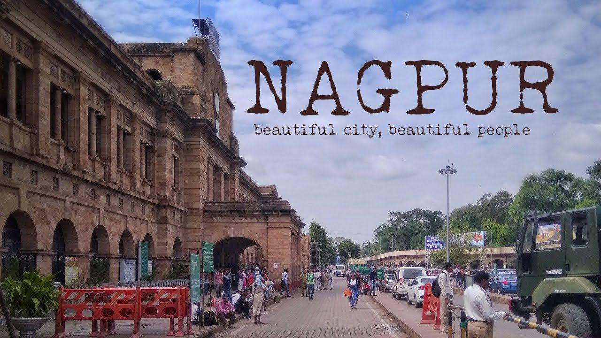

About smart cities

Nagpur is the third largest city and the winter capital of the Indian state of Maharashtra.
Nagpur city is the winter capital of the state of Maharashtra, with a population of 46,53,570. It has also recently been ranked as the cleanest city and the second greenest city of India.In addition to being the seat of annual winter session of Maharashtra state assembly “Vidhan Sabha”, Nagpur is also a major commercial and political center of the Vidarbha region of Maharashtra. ” Nagpur is also famous throughout the country as “Orange City” for being a major trade center of oranges that are cultivated in the region. Nagpur city was established by prince of Gond tribe “Bhakt Buland” in first half of 18th century. Nagpur lies precisely at the center of the country with the “Zero Mile Marker” indicating the geographical center of India. It has 14 Talukas and 12 Assembly Segment Constituencies.
Founded in the 15th century, Ahmedabad is the largest city in the state of Gujrat. The city is a vibrant business district and rising centre of education, information technology and scientific industries. Divided in two - the old city and the new city; The city offers different moods right from the hustle-bustle of C.G. Road in the heart of Ahmedabad to the quite retreat of of the Sabarmati Ashram. Ahmedabad enjoys a thriving cultural tradition, being the centre of Gujarati cultural activities and diverse traditions of different ethnic and religious communities. Popular celebrations and observances include Uttarayan - an annual kite-flying day on 14 January and the nine nights of Navratri - celebrated with people performing Garba - the folk dance of Gujarat - at venues across the city.
Gujarat

Gujarat, state of India, located on the country’s western coast, on the Arabian Sea. It encompasses the entire Kathiawar Peninsula (Saurashtra) as well as the surrounding area on the mainland.The state is bounded primarily by Pakistan to the northwest and by the Indian states of Rajasthan to the north, Madhya Pradesh to the east, and Maharashtra to the southeast. Gujarat also shares a small segment of its southeastern border with the Indian union territory of Dadra and Nagar Haveli, and, together with the Arabian Sea, it surrounds the territory of Daman and Diu. The coastline of Gujarat is 992 miles (1,596 km) long, and no part of the state is more than 100 miles (160 km) from the sea. The capital is Gandhinagar, on the outskirts of the north-central city of Ahmadabad (Ahmedabad)—the former capital, the largest city in the state, and one of the most-important textile centres in India.